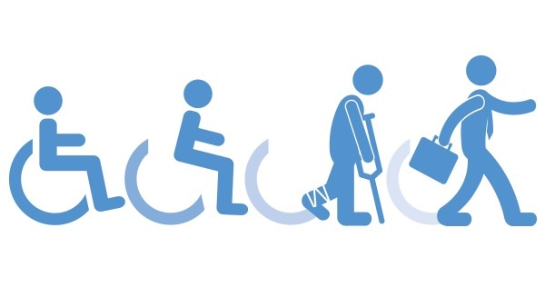

Prestaciones de la Seguridad Social
Introducción
El sistema de la Seguridad Social ofrece una amplia gama de prestaciones diseñadas para proteger al ciudadano frente a diversas contingencias, proporcionando un respaldo económico y social en momentos críticos de la vida.
Desarrollo
1. Incapacidad Temporal
La incapacidad temporal es una prestación que se concede cuando el trabajador sufre una enfermedad o accidente que le impide realizar su actividad habitual.
Requisitos: Estar afiliado y en situación de alta en la Seguridad Social, contar con un periodo mínimo de cotización y presentar la correspondiente baja médica.
Duración: Su duración dependerá de la evolución de la condición médica, pudiendo extenderse hasta que se estime la recuperación, y en algunos casos, evolucionar a una incapacidad permanente.
2. Invalidez
La prestación por invalidez se otorga cuando la capacidad para trabajar se ve reducida de forma permanente.
Tipos:
- Parcial: Cuando la persona presenta una limitación para trabajar en determinadas actividades, pero aún puede ejercer alguna actividad profesional.
- Total: Cuando el trabajador se encuentra imposibilitado para ejercer cualquier tipo de trabajo, aunque conserva capacidad para realizar actividades básicas de la vida diaria.
- Absoluta: Cuando se demuestra la incapacidad absoluta para trabajar, impidiendo por completo el desempeño de cualquier labor.
3. Maternidad/Paternidad
Estas prestaciones permiten a los padres compatibilizar la vida laboral con el cuidado de sus hijos.
Permisos: Los trabajadores tienen derecho a permisos retribuidos tanto por maternidad como por paternidad.
Cuantía: Se abona un subsidio basado en la base reguladora del trabajador, asegurando un porcentaje del salario habitual.
Duración: La duración del permiso varía según la legislación vigente, contemplando periodos prenatales y postnatales en el caso de la maternidad y un periodo específico para la paternidad.
4. Jubilación
La pensión de jubilación se fundamenta en el cumplimiento de ciertos requisitos relacionados con la edad y los periodos cotizados.
Edad: La edad de jubilación se determina según la normativa vigente, pudiendo existir modalidades de jubilación anticipada o parcial.
Periodos de cotización: Se requieren determinados años de contribución a la Seguridad Social para acceder a una jubilación completa o parcial.
Cuantía: La pensión se calcula en función de la base reguladora y los años cotizados, ajustándose a las particularidades de cada caso.
5. Otras Prestaciones Menos Frecuentes
Además de las prestaciones mencionadas, el sistema contempla otras ayudas que responden a situaciones específicas:
- Viudedad: Prestación que se otorga a los cónyuges supervivientes para asegurar un ingreso mínimo tras el fallecimiento del asegurado.
- Orfandad: Beneficio destinado a los hijos menores de edad o incapacitados de un trabajador fallecido, con el fin de proporcionar un sustento económico.
Conclusión
Contar con un sistema de Seguridad Social robusto es esencial para proteger al trabajador y a sus familiares ante contingencias imprevistas. Es fundamental que cada ciudadano se informe sobre sus derechos y obligaciones para asegurarse de recibir las prestaciones correspondientes en cada etapa de la vida. La legislación vigente y los manuales de la Seguridad Social son herramientas claves para entender y acceder a estos beneficios.
Fuentes consultadas
- Legislación vigente en materia de Seguridad Social
- Guías oficiales de afiliación de la Tesorería General de la Seguridad Social.
- Legislación laboral y de la Seguridad Social vigente (como el Real Decreto Legislativo 8/2015, de 30 de octubre, por el que se aprueba el Texto Refundido de la Ley General de la Seguridad Social).
- Seguridad Social
- BOE